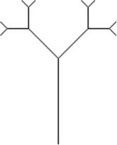
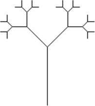
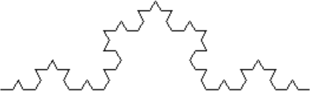
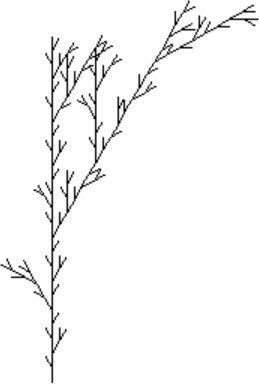
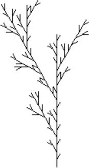
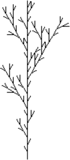
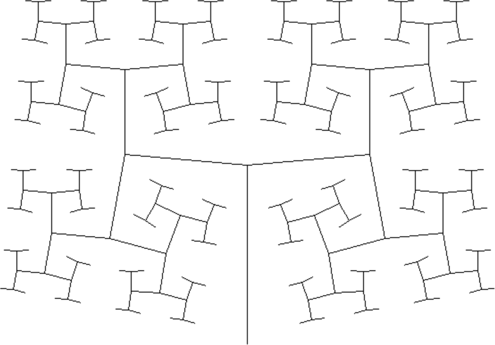

Úvod
by Jiří Znamenáček
Úvod
L-systémy jsou matematický systém pro popis růstu rostlin (původně řas) vyvinutý Aristidem Lindenmayerem již v šedesátých letech minulého století. Jeho základem je množina znaků (majících jistou interpretaci v živé přírodě, například „buňky řas dělící se různým způsobem“) a pravidla popisující, jak z výchozího řetězce („počáteční rozložení různých buněk“) nagenerovat řetězce nové („další generace buněk po několika děleních“).
Původně L-systémy zaznamenávaly pouze jednotlivé buňky organismu a pravidla pro jejich dělení. Později však tuto základní ideu rozšířil Przemyslaw Prusinkiewicz na grafickou interpretaci symbolů pomocí želví grafiky, čímž se množina objektů popsatelná L-systémy velmi zvětšila a také stala velmi přístupnou. Časem se možnosti interpretace generovaných řetězců dostaly například dokonce až ke generování hudby.
Příklad – zadání a provedení
Fraktální rekurzivní stromeček z přednášky o rekurzivních obrazcích v želví grafice pomocí L-systémů vygenerujeme při interpretačních pravidlech pro želvu..
| F | jdi dopředu o x kroků |
|---|---|
| + - | zatoč vlevo/vpravo o 45 stupňů |
| [ ] | ulož/obnov stav želvy |
...následujícím způsobem:
| startovní axiom | A |
|---|---|
| přepisovací pravidla | 1. A → F[+A]-A 2. F → FF |
Při vlastním výpočtu další generace jsou v aktuálním řetězci najednou nahrazeny všechny symboly z levé strany přepisovacích pravidel za symboly na straně pravé a ostatní symboly se zkopírují. Ve výsledku se počáteční řetězec A postupně prodlužuje následujícím způsobem:
| 0. generace | A |
|---|---|
| 1. generace | F[+A]-A |
| 2. generace | FF[+F[+A]-A]-F[+A]-A |
| 3. generace | FFFF[+FF[+F[+A]-A]-F[+A]-A]-FF[+F[+A]-A]-F[+A]-A |
| 4. generace | … |
Příklad – interpretace želví grafikou
Pro čtyři generace pak získáme následující výstup:

Poznámky
Všimněte si, jak rychle narůstá řetězec popisující výslednou strukturu, a jak jsou přitom přepisovací pravidla (a startovní axiom) jednoduchá! Zároveň je vidět, že některé znaky v řetězci – zde A – nemusí mít pro grafickou interpretaci žádný význam, slouží pouze k tvorbě následujících generací.
A interpretovali jako píšící krok dopředu, dostali bychom obrázek´s jednou generací větvení navíc:

Ve skutečnosti interpretace vzniklého řetězce závisí na příslušném problému – někdy (jako v našem příkladu) mají některé ze znaků jednoduchou (nebo i složitou) grafickou interpretaci, jindy je důležitý třebas jenom počet znaků ve výsledném řetězci.
Vše dosud uvedené si v dalším pěkně zformalizujeme, ať je v tom pořádek ^_^
Formální definice
Základní typ L-systému – tzv. deterministický bezkontextový systém (D0L-systém) – je formálně zaveden jako trojice $G = (Σ, ω, P)$, v níž:
-
$Σ$ – je abeceda neboli neprázdná množina symbolů, z nichž se mohou skládat řetězce jednotlivých generací;
📝Při běžném značení se $Σ^{*}$ používá pro množinu všech slov nad abecedou $Σ$ a $Σ^{+}$ je pak množina všech neprázdných slov nad abecedou $Σ$.📝Interpretace symbolů abecedy je závislá na problému.
-
$ω ∈ Σ^{+}$ – je axiom (též semínko) neboli neprázdný konečný řetězec znaků abecedy;
📝Axiom je tzv. startovací či počáteční řetězec, z nějž se pomocí přepisovacích pravidel $P$ (viz dále) vyrábí další generace.
-
$P ⊂ Σ × Σ^{*}$ – je konečná množina přepisovacích pravidel, tedy pravidel, pomocí nichž se ze znaků aktuální generace vytváří generace nová.
📝Jedno konkrétní pravidlo se formálně zapisuje jako $a → S$, kde $a ∈ Σ$ je prvek abecedy a $S ∈ Σ^{*}$ je slovo stvořené z libovolného počtu znaků abecedy.📝Zjevně je dovoleno, aby se některé znaky abecedy transformovaly jak na prázdný znak, tak na libovolně dlouhá (ale konečná, byť formální definice povoluje i nekonečná) slova.📝Pokud se v řetězci vyskytuje symbol abecedy, pro nějž není definované přepisovací pravidlo, pokládá se takový symbol za tzv. konstantu a do nové generace se jednoduše zkopíruje (tedy jako kdyby pro něj existovalo pravidlo $b → b$).
Přitom nultou generací L-systému je jeho axiom a N-tá generace (též iterace) vznikne paralelní aplikací přepisovacích pravidel na výsledek předchozí (tedy N-1) iterace. Proto se také o L-systémech často mluví jako o paralelních přepisovacích gramatikách.
Příklad – Fibonacciho posloupnost
Jako příklad L-systému, kde interpretace závisí pouze na délce vzniklého řetězce, si ukažme následující:
| abeceda $Σ$ | $\{A, B\}$ |
|---|---|
| axiom $ω$ | A |
| přepisovací pravidla $P$ | A → B B → BA |
Několik prvních generací spolu s jejich délkou (počtem použitých znaků abecedy):
| 0. | A | 1 |
|---|---|---|
| 1. | B | 1 |
| 2. | BA | 2 |
| 3. | BAB | 3 |
| 4. | BABBA | 5 |
| 5. | BABBABAB | 8 |
| 6. | BABBABABBABBA | 13 |
| 7. | BABBABABBABBABABBABAB | 21 |
| 8. | BABBABABBABBABABBABABBABBABABBABBA | 34 |
| 9. | … | 55 |
Vidíme, že N-tá generace tohoto L-systému počtem svých znaků přesně odpovídá N-tému číslu Fibonacciho posloupnosti. (Což se dá z přepisovacích pravidel poměrně snadno nahlédnout.)
Příklad – Kochova vločka
Vrátíme-li se ke grafické interpretaci jako u příkladu se stromečkem a upravíme úhel otočení na $60 °$, dostaneme za pomoci následujících pravidel..
| abeceda $Σ$ | $\{F, +, -\}$ |
|---|---|
| axiom $ω$ | F |
| přepisovací pravidlo $P$ | F → F+F--F+F |
..tzv. Kochovu vločku. Obrázky a odpovídající generující řetězce pro první čtyři generace:
| 0. |
F |
|---|---|
| 1. |
F+F--F+F |
| 2. |
F+F--F+F+F+F--F+F--F+F--F+F+F+F--F+F |
| 3. |
 F+F--F+F+F+F--F+F--F+F--F+F+F+F--F+F+F+F--F+F+F+F--F+F--F+F--F+F+F+F--F+F--F+F--F+F+F+F--F+F--F+F--F+F+F+F--F+F+F+F--F+F+F+F--F+F--F+F--F+F+F+F--F+F |
Stochastické L-systémy
Základní L-systémy – tedy typu D0L – jsou přísně deterministické, to jest podoba jakékoli generace je bezezbytku určena počátečními podmínkami. Pokud se pak používají například pro generování rostlin, máme problém – všechny jsou stejné.
Jelikož bychom se užitečnosti L-systémů pro (simulaci a) generování rostlin neradi vzdávali, byly pro podobné potřeby vyvinuty tzv. stochastické L-systémy (neboli 0L-systémy), jejichž prvkem je v nějaké podobě náhoda. Principiálně se dá zavést na dvou různých místech:
-
náhodná úprava interpretace – celý L-systém zůstává deterministický (tedy N-tá generace má vždy stejný generující řetězec), ale interpretace tohoto řetězce podléhá náhodným úpravám;
📝U grafických výstupů je typickou randomizací třeba náhodná změna délky kroku nebo úhlu otočení.
-
náhodný výběr přepisovacího pravidla – pro (některé) znaky abecedy existuje více přepisovacích pravidel, z nichž se na základě náhody v každém kroku vybere pouze jedno.
📝V tomto případě jsou už pochopitelně jednotlivé generace zcela náhodné a vytvořující řetězce se tak v každém běhu programu mohou lišit (a samozřejmě právě často liší).
Příklad – rostliny
Při zadání L-systému následujícím způsobem (váhy přepisovacích pravidel nejsou uvedeny a berou se proto jako stejně pravděpodobné)...
| abeceda $Σ$ | $\{F, +, -, [, ]\}$ |
|---|---|
| axiom $ω$ | F |
| přepisovací pravidlo $P$ | F → F[+F]F[-F]F F → F[+F]F F → F[-F]F |
| interpretace úhlu | 30 ° |
..můžeme obdržet nejrůznější výsledky:



Parametrické L-systémy
U parametrických L-systémů (PL-systémů) může být chování každého symbolu abecedy řízeno konečným počtem jemu příslušejících parametrů.
Uvnitř přepisovacích pravidel slouží parametry především ke snadnému předávání číselných hodnot do dalších generací (ať už přímo nebo v nějaké přepočtené podobě), ale k jejich přímému použití dochází většinou až při interpretaci (např. řízení aktuální délky kroku nebo úhlu natočení).
Ovšem u systémů s podmíněnými přepisovacími pravidly se parametry používají přímo pro výběr mezi samotnými přepisovacími pravidly.
Příklad – H-strom
Parametrický systém zadaný následujícími údaji..
| abeceda $Σ$ | $\{F, H, +, -, [, ]\}$ |
|---|---|
| axiom $ω$ | F(200) |
| přepisovací pravidlo $P$ | F(p) → H(p)[+F(p·R)][-F(p·R)] |
| parametr $R$ | 0,69 |
| interpretace úhlu | 85 ° |
.., kde parametr p řídí délku kroku při vykreslování, vygeneruje mírně pokřivenou variantu klasického H-stromu (obrázek pro sedm iterací):

Kontextové L-systémy
Kontextové L-systémy obsahují přepisovací pravidla (tedy alespoň jedno), která jsou závislá na kontextu právě zpracovávaného znaku, tzn. že použití přepisovacích pravidel je řízeno tím, zda před/za/okolo přepisovaného znaku se nachází znaky vyžadované příslušným kontextovým pravidlem.
Kontextová přepisovací pravidla se zapisují jako $lc < a > rc → S$, kde $lc$, resp. $rc$, jsou příslušný levý, resp. pravý, kontext přepisovaného znaku.
L-systémy obsahující alespoň jedno oboustranné kontextové pravidlo se označují jako 2L-systémy, ty s alespoň jedním jednostranným pravidlem (a nezáleží na tom zda levým nebo pravým) pak jako 1L-systémy.
Příklad – propagace signálu
1L-systém s následující definicí..
| abeceda $Σ$ | $\{a, A\}$ |
|---|---|
| axiom $ω$ | Aaaaaa |
| přepisovací pravidla $P$ | A < a → A A → a |
..zjevně dokáže přenášet signál po řetězci znaků z leva do prava:
| 0. | Aaaaaaaa |
|---|---|
| 1. | aAaaaaaa |
| 2. | aaAaaaaa |
| 3. | aaaAaaaa |
| 4. | aaaaAaaa |
| 5. | aaaaaAaa |
| 6. | aaaaaaAa |
| 7. | aaaaaaaA |